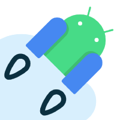

Todo sobre Kotlin.
La mayoría de los lenguajes de programación populares en la actualidad nacieron en los años 80s y 90s, arrastrando decisiones de diseño de su época. Kotlin representa a la nueva generación. Diseñado para la interoperabilidad total.

Historia de Kotlin
Origen y evolución a lo largo del tiempo. Explicando también su paradigma, areas de aplicación, así como sus ventajas y desventajas frente a otros lenguajes de programación.
Orígenes y Creadores
Fue creado en 2010 por JetBrains (empresa creadora de IntelliJ IDEA) como respuesta directa a las quejas de una industria que consideraba a Java (en ese entonces el lenguaje principal para Android) como un lenguaje excesivamente estricto y verboso. Dmitry Jemerov evaluó alternativas como Scala, pero al notar que sus tiempos de compilación eran inaceptables, decidieron crear su propio "Java moderno". Contrataron a Andrey Breslav como Diseñador Principal con la misión de construir una herramienta moderna, concisa y totalmente interoperable con Java.
Las limitaciones técnicas de Java
El "Error del Billón de Dólares"
El fallo más común en Java (NullPointerException) causaba que las apps colapsaran. Kotlin se diseñó con Null Safety nativo para erradicar esto.
Código Repetitivo
Tareas sencillas requerían decenas de líneas rutinarias. Kotlin prioriza expresar ideas con el menor código posible.
Estancamiento
La evolución de Java era lenta. Se necesitaba un lenguaje ágil que combinara la Programación Orientada a Objetos con la Funcional.
Contexto Histórico
Eventos imortantes en la evolución de Kotlin y su soporte de primera clase por parte de Google.
2010 - Oracle vs Google
Mientras JetBrains comienza el desarrollo interno de Kotlin, estalla una bomba en la industria: Oracle demanda a Google por casi 9,000 millones de dólares alegando infracción de derechos de autor por el uso de las APIs de Java en Android. Aunque Google finalmente ganaría el caso en la Suprema Corte años después (2021), la gigantesca presión legal durante esa década obligó a Google a buscar una alternativa libre de problemas de licencias.
2011 - El Anuncio de Kotlin
En el JVM Language Summit, JetBrains revela al mundo el "Proyecto Kotlin". El nombre proviene de la isla de Kotlin, ubicada cerca de San Petersburgo, Rusia. Fue un guiño inteligente a Java, cuyo nombre también proviene de una isla (en Indonesia). Su promesa era clara: compilar tan rápido como Java, pero siendo mucho más seguro y conciso.

2012 - Filosofía de Codigo Abierto
El proyecto abandona su estado cerrado y se libera bajo la licencia de código abierto Apache 2.0. Fue una jugada maestra, ya que permitió a la comunidad global de desarrolladores probarlo, reportar errores y contribuir a su diseño, asegurando que no fuera solo una herramienta corporativa cerrada.
2016 - Versión 1.0 Estable
Tras más de cinco años de rigurosas pruebas en fase alfa y beta, se lanza la versión 1.0 estable. Con este lanzamiento, JetBrains se comprometió a mantener la compatibilidad hacia atrás a largo plazo, dándole a las grandes corporaciones la confianza técnica que necesitaban para empezar a usar Kotlin en entornos de producción reales.
2017 - El Respaldo de Google
Durante el magno evento Google I/O, ocurre el punto de inflexión más grande en la historia del lenguaje: Google anuncia que Kotlin recibe soporte oficial de primera clase (First-class) para el desarrollo en Android. De la noche a la mañana, el lenguaje pasó de ser una herramienta de nicho a un gigante respaldado por los creadores del sistema operativo móvil más usado del mundo.
2018 - La Fundación Kotlin
Para asegurar que el lenguaje jamás sufriera los mismos problemas legales que Java, Google y JetBrains unen fuerzas y crean la Kotlin Foundation. Esta organización sin fines de lucro garantizó que el lenguaje permanecería libre, abierto y estrictamente independiente de los intereses de una sola empresa.
2019 - El Nuevo Estándar de Android
Google anuncia que el ecosistema de Android pasa a ser "Kotlin-first". A partir de ese momento, todas las nuevas herramientas, librerías oficiales (Jetpack) y documentaciones de Android se diseñarían y optimizarían primero para Kotlin, coronándolo definitivamente como el rey del desarrollo en Android.
Paradigma y Compilación
Kotlin fusiona la Programación Orientada a Objetos (POO) con la Programación Funcional. Soporta jerarquías explícitas y polimorfismo, mientras ofrece funciones de primera clase y literales lambda.
Compilador K2: Flexibilidad Multiplataforma
El backend de última generación que permite a Kotlin hablar el lenguaje de cada sistema.
- Null Safety Nativo +
- Frente a Java, que sufre mucho por los errores cuando el sistema intenta leer un dato que "no existe" o está vacío (NullPointerException), Kotlin te obliga a manejar esos casos desde que estás escribiendo el código. Esto previene sorpresas y hace que las aplicaciones sean mucho más estables.
- Sintaxis Concisa y Directa +
- Frente a lenguajes como Java o C++, Kotlin te permite hacer lo mismo escribiendo mucho menos código. Te ahorra tener que escribir bloques de texto repetitivo y aburrido solo para configurar datos simples. Al escribir menos líneas, el código es más fácil de leer, mantener y hay menos espacio para cometer errores.
- Interoperabilidad con Java +
- Frente a lenguajes como Swift (que a veces requiere reescribir todo el código viejo de Objective-C para que funcione bien), Kotlin te permite combinar archivos de Java y Kotlin en el mismo proyecto sin problemas. Puedes usar código antiguo de Java sin tener que modificarlo ni un poco.
- Tareas en Segundo Plano más Ligeras +
- Frente a Java, que usa métodos muy pesados y complejos para hacer varias cosas a la vez, Kotlin introdujo las "Corrutinas". Son una forma súper ligera de hacer tareas en segundo plano (como descargar datos de internet o cargar imágenes) sin trabar la pantalla del usuario y consumiendo mucha menos memoria del dispositivo.
- Capacidades Multiplataforma (Compilación Directa) +
- Frente a C++ o herramientas como Flutter, Kotlin te permite escribir la lógica de tu programa una sola vez y compartirla entre Android, iOS y computadoras de escritorio. Esto es posible gracias a una tecnología llamada Kotlin/Native, que compila tu código directamente a lenguaje máquina sin necesidad de programas intermediarios. Esto hace que la aplicación arranque al instante, consuma poca memoria y corra de forma 100% nativa en cualquier dispositivo.
- Tiempo de Compilación Inicial +
- Frente a Java puro, la primera vez que compilas un proyecto desde cero en Kotlin puede tardar un poco más por las revisiones de seguridad extra que hace. Esta desventaja se vuelve mucho más notoria si usas la compilación directa (Kotlin/Native) para iOS o escritorio, ya que traducir el código moderno directamente a lenguaje máquina exige muchísimo más tiempo y recursos de tu computadora.
- Curva de Aprendizaje +
- Frente a lenguajes más antiguos y tradicionales, Kotlin usa formas de pensar más modernas (mezclando distintos estilos de programación). Si un equipo de desarrolladores está muy acostumbrado a la forma vieja de hacer las cosas en Java, les tomará tiempo, esfuerzo y estudio adaptarse a las nuevas herramientas.
- Tamaño Extra en la Aplicación +
- Frente a lenguajes de bajo nivel como C++ o Rust, las aplicaciones hechas en Kotlin que corren sobre la Máquina Virtual de Java necesitan empaquetar una pequeña "caja de herramientas" extra (la librería estándar) para poder funcionar. Aunque en los celulares modernos ese peso no se nota, en sistemas con memoria extremadamente limitada sí es un detalle a considerar.
- Optimización del Entorno de Ejecución +
- Frente a Java, hay una ligerísima desventaja de rendimiento en casos muy extremos. Como el entorno donde corren ambos lenguajes (la JVM) fue creado y pulido durante décadas específicamente para Java, a veces el código de Java puro se ejecuta una fracción microscópica más rápido que el de Kotlin en procesos matemáticos súper pesados.
- Pérdida de Librerías (al compilar directamente) +
- Aunque la compilación directa a lenguaje máquina (Kotlin/Native) tiene grandes beneficios de rendimiento frente a Java, tiene un costo, pues al saltarte el entorno tradicional de Java para ir directo al procesador, pierdes el acceso automático a las miles de librerías gratuitas de Java que se han construido durante décadas y quedas limitado a usar únicamente las herramientas creadas específicamente para el ecosistema puro de Kotlin.
Ecosistema y Aplicaciones
Android Oficial
Lenguaje preferido por Google. UI moderna con Jetpack Compose y estabilidad total.
Backend Robusto
Adopción masiva en Spring Boot y Ktor gracias a su seguridad ante nulos (Null Safety).
Kotlin Multiplatform
Un solo código para iOS, Web y Desktop sin sacrificar el rendimiento nativo.
Anatomía del Código
Identificadores, Tipos de Datos y Declaraciones.
La Documentación Oficial y Sintaxis
La documentación oficial de Kotlin (mantenida por JetBrains) es la fuente de verdad que dicta tanto la gramática léxica como las convenciones idiomáticas. Según esta especificación, los identificadores pueden contener letras, dígitos y guiones bajos (_), pero no pueden comenzar con un dígito. El lenguaje es estrictamente case-sensitive y los puntos y coma (;) son opcionales.
La especificación divide las palabras clave en dos categorías:
- Hard Keywords: Palabras como
class,valofunque nunca pueden usarse como nombres. - Soft Keywords: Palabras como
importque actúan como identificadores según el contexto.
Para la interoperabilidad con Java, se permiten identificadores escapados mediante backticks (`).
Estructura de Strings (Plantillas)
La documentación destaca el uso de String Templates. En lugar de concatenar con +, Kotlin permite incrustar variables o expresiones directamente en un String usando el símbolo $, mejorando la legibilidad.
val `when` = "Ahora" // Uso de palabra reservada con backticks
val saludo = "Hola, $`when`" // Incrusta la variable directamente
val info = "Longitud: ${saludo.length}" // Evalúa la expresión entre llavesSistema de Tipos Unificado y Operadores
El sistema de tipos de Kotlin tiene como raíz a Any?, estableciendo que todo es un objeto. No existen tipos primitivos separados gramaticalmente. Sin embargo, el compilador realiza una optimización: mapea tipos no anulables (Int, Boolean) a primitivos de la JVM (int), y hace boxing solo cuando son anulables o genéricos.
Operadores Frecuentes: Son llamadas a funciones bajo el capó (sobrecarga de operadores):
- Aritméticos:
+,-,*,/,% - Comparación:
==y!=evalúan contenido (funciónequals()).===evalúa identidad de memoria.
Null Safety (El fin de la NullPointerException)
Una de las características más aclamadas del lenguaje es su sistema de tipos diseñado para erradicar errores de nulos. El sistema distingue explícitamente entre referencias seguras y anulables:
- Un tipo regular (ej.
String) no puede ser nulo por defecto. - Para permitir nulos, se declara como "anulable" añadiendo
?(ej.String?).
var textoNulo: String? = null // Válido por el '?'
// Operadores de Seguridad contra Nulos:
val longitud = textoNulo?.length ?: 0 // Llamada segura (?.) y Operador Elvis (?:)Inferencia de Tipos y Mutabilidad
Kotlin utiliza inferencia de tipos, permitiendo omitir el tipo si se deduce de la expresión asignada. Exige distinguir entre:
- val (Value): Referencia inmutable (como
finalen Java). Fomenta código seguro. - var (Variable): Referencia mutable que puede reasignarse.
Type Checks y Smart Casts (Casteo Automático)
Se utiliza el operador is para comprobar el tipo de un objeto en tiempo de ejecución. Si la verificación es exitosa, el compilador realiza un Smart Cast, convirtiendo la variable al tipo objetivo automáticamente.
fun imprimirLongitud(obj: Any) {
if (obj is String) {
println(obj.length) // 'obj' ya es tratado como String (Smart Cast)
}
}Funciones Lambda y Closures
Las expresiones lambda son funciones anónimas que pueden ser tratadas como valores (asignadas a variables o pasadas como parámetros). Tienen una sintaxis concisa entre llaves {}. Si la lambda tiene un solo parámetro, se puede omitir su declaración y usar la palabra clave implícita it.
Closures: Una lambda en Kotlin puede acceder a su closure, es decir, a las variables declaradas en el ámbito exterior. A diferencia de Java (donde deben ser finales), en Kotlin las lambdas pueden modificar las variables capturadas.
var suma = 0
val numeros = listOf(1, 2, 3)
// Lambda capturando y modificando una variable exterior (closure)
numeros.forEach { numero ->
suma += numero
}
// Sintaxis simplificada con el parámetro implícito 'it'
val dobles = numeros.map { it * 2 }Expresiones Condicionales (if y when)
En Kotlin, if y when son expresiones (devuelven un valor). Esto elimina la necesidad del operador ternario convencional.
// Uso tradicional y con bloque else
var max = a
if (a < b) max = b
var max2: Int
if (a > b) {
max2 = a
} else {
max2 = b
}
// if como expresión (asignación directa)
val maximo = if (a > b) a else bLa estructura when reemplaza al clásico switch. Es increíblemente flexible y permite evaluar valores exactos, tipos, o rangos enteros mediante la palabra clave in o !in.
val x = 25
when (x) {
1 -> print("x es igual a 1")
in 10..20 -> print("x está en el rango 10-20")
!in 21..30 -> print("x NO está en el rango 21-30")
else -> print("Ninguna de las condiciones anteriores")
}Estructuras de Iteración
El bucle for puede iterar sobre cualquier cosa que proporcione un iterador, como arreglos, colecciones o rangos dinámicos. Por su parte, while y do-while funcionan de forma tradicional, garantizando do-while al menos una ejecución.
// Bucle for con rangos, pasos descendentes y arreglos
for (i in 1..3) print(i) // Imprime: 123
for (i in 6 downTo 0 step 2) print(i) // Imprime: 6420
val frutas = arrayOf("manzana", "kiwi", "cereza")
for (fruta in frutas) { println(fruta) }
// Bucle while
var contador = 5
while (contador > 0) {
contador--
}
// Bucle do-while (Las variables declaradas en el bloque do, son visibles en el while)
do {
val y = recuperarDatos()
} while (y != null)Clases, Data Classes e Instanciación
Kotlin simplifica la definición de tipos reduciendo el código repetitivo drásticamente. Por defecto, todas las clases son finales (no heredables) a menos que se marquen con open.
- Clases Estándar: Definidas con
class, permiten declarar el constructor primario directamente en el encabezado. - Data Classes: Marcadas con
data class. El compilador autogenera métodos vitales comoequals(),hashCode(),toString()ycopy().
Instanciación: Una de las reglas gramaticales más distintivas frente a otros lenguajes es la ausencia de la palabra new. Para instanciar un objeto, simplemente se invoca al constructor como si fuera una función normal.
// Definición concisa de una Data Class
data class Desarrollador(val nombre: String, var experiencia: Int)
// Instanciación directa (Sin la palabra 'new')
val dev = Desarrollador("Ada", 5)
dev.experiencia = 6 // Modificación de la propiedad 'var'